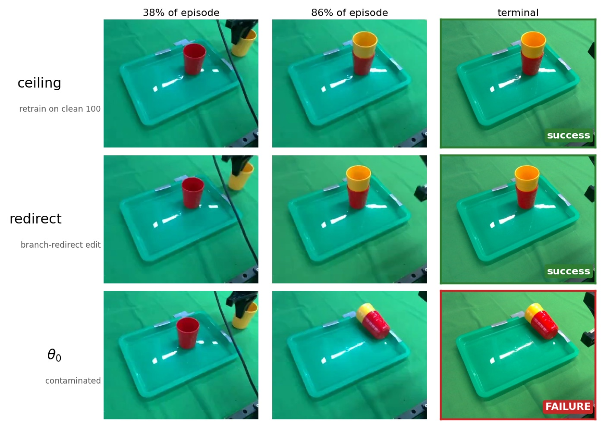

Executive Summary
A robot policy learns by copying demonstrations that people recorded by hand. When one of those people withdraws consent, the honest answer is to train the policy again from scratch without their data, and the bill for that scales with the size of the policy and the size of the dataset. So a family of cheap weight-editing operators grew up around the problem, and until now the question of whether an edit worked has usually been settled by one number: a forgetting loss, or a single membership attack. A preprint posted in August 2026 reopens that verdict and treats it as an auditing problem instead.
The design has two moves. First, split the claim into a behavior axis and an evidence axis. Second, build the ruler for both axes out of independently retrained policies. Retrains do not agree perfectly with each other either, so anything that lands inside that spread has no measurable distance from a retrain. Measured that way, the edit that recovered eighteen of twenty real-robot trials and came closest to the retrain ceiling was caught by the membership audit exactly as easily as the untouched original. The failure runs in the other direction too. Edits that blurred the evidence pushed behavior further away from the retrain than where they started. A test that folds both axes into one hypothesis rejected every checkpoint the authors audited.
The authors are explicit that their audit cannot certify deletion. It can only refute it. The practical residue is sharper than that caveat suggests. Running this audit at all requires knowing what the training data was and being able to afford running the training procedure again. An organization missing either condition cannot refute a deletion claim, and cannot support one either. When the right to erasure crosses into Physical AI, the first thing to build is not an audit tool. It is the data infrastructure that makes a control group possible.
18/20
Real-robot trials the edit recovered
ACT arm; the retrain ceiling was 20/20
1.000
Attack AUC on that same edit
Retrain null 0.639; identical to the original
All nine
Checkpoints rejected by the joint test
Seven edits plus two controls, all at p=0.050
13 of 14
Prior unlearning methods that broke the policy
Closed-loop success fell 68% to 101%
When a deletion request reaches a robot policy
A policy built by imitation learning grows by copying what a human operator left behind. The angle it grips a cup at, the point where it lets go, all of it comes from somebody's hands on a teleoperation rig. If that person withdraws consent, their demonstrations have to come out of what the policy learned. The clean answer is simple enough: train again from scratch on the data without them. The problem is the price. As policies grow and datasets grow, full retraining turns into an invoice that arrives with every single request.
That is why cheap editing operators appeared, all of them working on already-trained weights. Push the loss up on the data you want gone. Rewrite just the offending action into a different one. Or simply keep training a little longer on what remains. Any of these costs a small fraction of a retrain. Whether the resulting policy has earned the right to be called clean, though, has usually been decided by a single indicator: did the forgetting loss rise enough, or can a membership inference attack no longer pick the data out?
A preprint posted to arXiv on 21 August 2026 takes direct aim at that habit. Written by Jiazhuo Li of the University of Michigan with collaborators at Tsinghua Shenzhen International Graduate School, Zhejiang University, and Wuhan University of Technology, it frames the problem in its opening paragraph.
“We ask the mechanism question: when a demonstration is ‘unlearned’ from a robot policy, what exactly is gone?”
What separates this from unlearning in a text model is the closed loop. A language model can be interrogated one output at a time. Ask it to produce the sentence you claim to have removed and see whether it does. A policy does not work that way. It acts inside a feedback loop where its own actions change the next observation, so two runs of the same weights can differ on whether the bad behavior shows up at all, depending on where the episode started. You cannot read what remains off the output. If the token-level version of this problem is the one Pebblous covered in token-level provenance and unlearning, this paper carries it over to policies with bodies.
1.1The 30 demonstrations that taught the policy to knock the cup over
The experiment starts with a cup. Of the 130 demonstrations the authors teleoperated themselves, 30 release the cup at the wrong point and knock it over, and the policy absorbs that mode faithfully. Then a deletion request arrives for those 30. The request is not phrased as “stop knocking the cup over.” It is phrased as “remove these episode indices.” In the paper's own framing, a deletion request names its target by identity rather than by any oracle behavior label. Which means the data already has to carry labels fine enough to point at. That is the same precondition Pebblous reached in provenance and deletion in agent memory.
One caveat has to be read alongside this setup. The 30 episodes marked for deletion are also the ones teaching the wrong behavior, so in this experiment removal makes the policy better. The authors guard against the obvious misreading themselves: success here means proximity to the retrain rather than maximization of task success, and deleting a harmful mode may well reduce task success. The ethics statement also states plainly that the revocation scenario is constructed. Real withdrawals usually pull out perfectly good data, and performance goes down when they do.
1.2Withdrawal is already hard one layer down
Step outside the paper for a moment and the picture gets worse before it gets better. Long before you reach a trained policy, withdrawal is structurally blocked at the dataset layer. Open X-Embodiment, the flagship public asset in robot learning, is a federation stitched together from 60 datasets contributed by around thirty labs. The data ships under CC BY 4.0, a license written so that copies already distributed cannot be recalled. There is a form for registering a dataset; there is no public form for withdrawing one, and the contact paths are a repository issue tracker and a mailing address. Because the structure is federated, a withdrawal request has to travel back to the lab that contributed the data, and unofficial mirrors mean that pressing a central button would not propagate anyway. Assets unified under a single protocol are not obviously better off. DROID, where thirteen institutions spent twelve months collecting 76,000 trajectories on one robot platform, has no public withdrawal procedure we could find either. To state it precisely: in both cases we failed to find documented public withdrawal procedures, which is not the same as establishing that no internal procedure exists.
This report's question sits one step further up. Even after the data is gone, the policy trained on it keeps running. A file disappearing from a mirror and an influence disappearing from a set of weights are two different events. The first one you can confirm. Confirming the second requires a ruler, and building that ruler is what this paper did.
“We deleted it” bundles two different claims
The paper's opening move is a diagnosis: the phrase “we deleted it” is bundling together two different claims. One is that the edited policy acts like a policy retrained without those demonstrations. The other is that an auditor with query access can no longer detect that it was trained on them. The paper names the first the behavior axis and the second the evidence axis, and pins each one down as a definition.
2.1Behavior axis: same state, same action as the retrain?
The behavior axis measures the gap between what the edited policy does and what the retrain does when both are placed in the same state. The gap is reported region by region along the contaminated trajectories: before the problem starts (PRE), the stretch where the bad action is recorded (BRANCH), immediately after (POST), and the tail end of the trajectory (TAIL). Units are raw action units, unnormalized. The reading rule is where the paper's central idea lives. The reference point is not zero but the distance between independent retrains, which the paper calls the floor. In its own words, a model at the floor is as close to a retrain as retrains are to each other.
The definition carries an exclusion clause: closed-loop success is a separate manifestation channel, never equated with it. That single line produces the sharpest result later in the paper. Performing well on the physical robot and behaving like the retrain are different events, and one checkpoint actually splits the two apart.
2.2Evidence axis: one ranking number is not enough
The evidence axis measures whether an auditor can separate the demonstrations marked for deletion from matched non-member demonstrations. Here too the baseline is the retrain: running the same attack against a retrain produces the null. But the paper insists on reporting two numbers rather than one. The first is the rank statistic, attack AUC. The second is the absolute member-loss level relative to the null, written as mem/null. The reason is stated flatly: rank statistics are scale-free but blind to overshoot, and the pair is the audit. Pebblous covered what a membership inference attack is in the first place in membership inference in medical AI.
Lower mem/null is worse. The metric divides the edited policy's member loss by the retrain's member loss, so 1.0 is the target. Below 1.0 means the policy still fits the data marked for deletion better than a retrain would, which is memory left behind. Above 1.0 means it fits that data worse than a retrain does, so the fact that an edit happened becomes an anomaly signal in its own right. The 0.22 and 1.83 that appear later are not “small, then grew.” They are “missed the target on one side, sailed past it on the other.”
The paper turns this blind spot into a proposition. A rank statistic is invariant to any monotone transformation that inflates member and non-member losses in the same direction, so it structurally passes edits that inflate both together. Checkpoints of exactly that kind get measured later. The scope of the evidence claim is narrowed honestly as well: the definition states that evidence claims are scoped to the tested loss-based auditor family.
The complaint that one metric is not enough had already been raised outside robotics. A 2022 paper that rebuilt membership inference from first principles argued that what matters is detection power in the low false-positive regime, and later work reported that standard membership evaluations lose power there and miss unlearning violations as a result. The rank-and-absolute pair in this paper is close to a robotics edition of that warning.
2.3Only one of four quadrants earns the claim
Because the two axes are independent, an edited policy lands in one of four quadrants: behavior repaired only, rank passed only, absolute level overshot, or both axes satisfied. Only the last one earns the right to a deletion claim. The diagram below places the representative checkpoints the paper actually measured into those four boxes. The box worth looking at is not one of the full ones. It is the empty one.
Pebblous diagram, reinterpreting Tables 1 and 12 (the ACT chunk-50 block) of Li et al. (2026), arXiv:2608.20784v1. Every figure shown is from the ACT arm, and these cells are not directly comparable with cells from other policy classes.
A ruler made of retrains
Two axes defined, the next job is calibration, and here the paper earns its name. The origin of the scale does not sit at zero. It sits at the retrain. The reason is mundane: train twice on identical data and you get two policies that are not identical. Initialization differs, batch order differs, and some of that survives into the actions. Anchor the scale at zero and you have built a standard that the retrains themselves would fail. So the reference becomes the distance between retrains. Land closer than that, and there is no measurable basis for distinguishing you from one.
Where the ruler was applied matters as much as how it was built. The authors ran the same audit across three real policy classes and two simulation arms. ACT is an 80M-parameter transformer policy that regresses actions in chunks. Diffusion Policy generates action sequences through a diffusion process. And π₀.₅ is a 3B flow-matching vision-language-action model, re-fit with LoRA on a frozen backbone. All three build actions in fundamentally different ways, which is why the dissociation between the two axes reproducing across all three cannot be waved off as coincidence. That said, the only arm light enough to support nineteen retrains was ACT, the cheapest of the three, and that constraint runs straight into the cost discussion at the end of this report.
3.1Three retrain fleets, nested inside each other
The number of retrains appears three different times in the paper, and blurring them together will misread the results. In the ACT arm the three play distinct roles and nest: the floor sits inside the evidence null, and the evidence null sits inside the nineteen-replica conformal fleet.
The retrain fleet structure of the ACT arm. Other policy classes are built at different scales: Diffusion Policy has a 4-retrain floor (6 pairs), π₀.₅ has only 3 LoRA re-fits, and PushT is a 5-seed fleet running 250 rollouts per condition. Source: Li et al. (2026), Table 3.
The evidence null landing at 0.639 deserves a note of its own. Anyone who applies the folk rule that AUC 0.5 means no discrimination will misread this paper. The baseline here is not a theoretical value but a measured property of actual retrains, and the authors explain the elevation directly. Shuffle the member labels at random across the 50-episode pool and every retrain seed lands mid-distribution, with no drift tracking the order of collection sessions. It is small-sample spread, not an identity carried by the group marked for deletion. The margin on this null is 0.105, computed to include not only seed variation but frame-draw variation. The band of values obtainable at this pool size with no membership information at all is also reported, running from 0.24 to 0.76. The figure 0.639 falls inside it.
Nor is an elevated null peculiar to ACT. Audit the same 30-against-10 pool on Diffusion Policy and π₀.₅ and the nulls come out at 0.534 and 0.558. The null sits in a different place on every arm, so how far an edit has strayed has to be read against that arm's own null, separately. On ACT and π₀.₅ the unedited policies both sit at 1.000, as far from the null as the scale allows. How large that distance is in absolute terms shows up best in the PushT arm, where the unedited policy runs a mem/null between 0.088 and 0.109. Put in the paper's terms, it fits the contaminated episodes roughly ten times better than a model that never saw them.
3.2The floor varies fourfold across regions
The measurements themselves settle why a single floor laid across the whole trajectory will not do. The distance between retrains is itself region-dependent. In BRANCH, where the wrong action is recorded, it is 1.81. In TAIL, at the end of the trajectory, it is 7.27. A factor of four. Late in a trajectory, retrains simply differ from each other a lot, and dropping a single pooled floor onto that region will have you reporting that your best edit reached the null when it did not.
Below is how the three values sit in the BRANCH region. The unedited policy is 3.99 away from the retrain, the floor is 1.81, and the gap an edit has to close is the 2.18 between them. The best redirect edit reached 3.45, which closes 24.9% of that gap. The other three quarters are untouched.
Pebblous reinterpretation of the BRANCH column of Table 4 in Li et al. (2026). Re-measure the same edit under the full 50-step planned-horizon convention and recovery jumps to 75.1%, because the unedited policy's divergence grows steeply late in the chunk. The paper treats the executed-horizon value as primary. That the choice of convention triples the same edit's report card is itself one of the paper's arguments.
3.3The conformal test only refutes
Rather than stopping at two separately reported axes, the paper folds them into a single hypothesis. It tests whether a vector combining BRANCH-region behavior divergence, the log absolute mem/null, and the AUC difference from the null is exchangeable with the retrain fleet. Each retrain replica is first scored for how atypical it is relative to the others, then the audited checkpoint is laid onto that distribution to yield a p-value. The floor on p is fixed at 1/(K+1) for a fleet of size K. That is why the authors pushed the fleet out to nineteen: only then does the floor drop to 0.05, low enough for rejection at conventional significance.
The paper nails this down in the same sentence that introduces it. The test is one-sided toward refutation, never certification. Refutation at conventional significance is attainable; certification still is not. Passing this audit is therefore not proof that anything was deleted. Passing is a minimum condition, and all the audit can do is break a deletion claim.
The results come later, but the direction is worth stating now: all nine audited checkpoints were rejected at p=0.050. Read that number as “barely significant” and you have inverted its meaning. With a fleet of nineteen, 0.050 is the smallest value obtainable, which makes it the strongest rejection this fleet can produce. The effect sizes show the headroom. Nonconformity scores for the checkpoints run from 16 to 57, while the range replicas produce against each other runs from 0.4 to 3.3, median 1.0. Even the closest redirect sits at sixteen times the replica median.
Same checkpoint, opposite verdicts
With the ruler ready, the measuring begins. In the ACT arm the authors built a ladder by raising the editing budget step by step. redirect is a local edit that rewrites the offending action into a different one. ascent is a global edit that pushes the loss up on the data marked for deletion. FT is the control that merely keeps training on what remains. Read attack AUC and mem/null together at each rung and something invisible to a rank-only view comes into focus.
| Checkpoint | Attack AUC [95% CI] | vs. null (0.639) | mem/null | How to read it |
|---|---|---|---|---|
| θ₀ (unedited) | 1.000 [1.00, 1.00] | +0.36 | 0.22 | Still strongly memorized |
| FT200 (control) | 1.000 [1.00, 1.00] | +0.36 | 0.19 | Lower than θ₀, so memorization deepened |
| redirect R200 | 1.000 [1.00, 1.00] | +0.36 | 0.40 | Behavior repaired, evidence untouched |
| redirect R400 | 0.990 [0.96, 1.00] | +0.35 | 0.44 | More budget, still saturated |
| ascent B100 | 0.940 [0.86, 1.00] | +0.30 | 0.57 | Rank starts coming down |
| ascent B200 | 0.650 [0.44, 0.84] | +0.01 | 0.84 | Rank reaches the null, absolute still below |
| ascent B300 | 0.557 [0.34, 0.76] | −0.08 | 1.59 | Past 1.0 |
| ascent B400 | 0.533 [0.30, 0.75] | −0.11 | 1.83 | Well past 1.0 |
The evidence ladder for the primary θ₀ lineage, ACT chunk-50. Source: Li et al. (2026), Table 1. The retrain null AUC is 0.639 with a margin of 0.105. mem/null targets 1.0, and every episode-bootstrap confidence interval excludes 1.0, meaning no rung settled onto the null in absolute terms.
4.1Masking: the behavior is fixed and the auditor finds it anyway
The third row of that table is what this report's title rests on. redirect R200 closed 24.9% of the behavior gap, the best of any rung on the ladder. The attack AUC on that same checkpoint is 1.000. Identical to the original policy that deleted nothing. The auditor identifies that this policy trained on the demonstrations marked for deletion without the slightest difficulty. mem/null stays at 0.40, less than half the target. The paper calls this masking. The behavior looks good, so the edit reads as a success, while the evidence has not moved a step.
What matters is that this is not a fluke. The authors repeated the same edit across three independently trained θ₀ seeds, and masking reproduced on all three. Consistent in the wrong direction.
The behavior-side replication points the same way. Across all three lineages, redirect lifts the BRANCH region it edits up to retrain level (1.05, 1.05, and 1.03 relative to the null) and leaves the tail region alone. Local repair genuinely happens, evidence stays put, and the pairing repeats when you change lineage. It also crosses policy classes. In the π₀.₅ arm, redirect, FT, and ascent all three drew attack AUC 1.000 and could not be told apart from the unedited policy, while in absolute terms they closed only about a third of the distance from unedited to null (mem/null going from 0.10 to 0.34, 0.34, and 0.44).
4.2Overshoot: the rank passes while the absolute sails past the null
Lower on the ladder the opposite happens. As the budget grows, ascent drags the attack AUC down until it reaches 0.650 at B200. The null being 0.639, that is a point where rank offers no way to tell it from a retrain. Stop here, report the rank, and you would declare success. But mem/null on that same checkpoint is 0.84, and raising the budget further sends it to 1.59 and then 1.83, straight past 1.0. The policy now fits the deletion targets worse than a retrain does, meaning the fact of the edit has itself become a signal. And the price paid for that was behavior drifting further from the retrain than where it started.
There is something worse for an operator. What decides where ascent stops is not the editing budget but the training draw. Run the same ladder on three different training seeds and the mem/null endpoints land at 1.83, 0.91, and 1.19. The stopping rule ascent uses refers to its own loss, so the saturation level shifts with the lineage. In the paper's phrasing, it is the training draw, not the budget, that sets both endpoints. If the same operator at the same budget gives you a result that depends on the draw, it is hard to use that operator as an instrument of compliance.
Being unable to identify a stopping point is a problem on the rank side too. Interpolating where ascent's rank crosses the null gives 199 steps, but the paired bootstrap confidence interval runs from 116 all the way to 358, and a quarter of the resamples never cross the null at any budget. The behavior-side price, meanwhile, grows without wobbling. Through B50 it stays inside the floor's own noise, turns to −14.0% at B100, and reaches −182% at B400. That is close to twice the gap that needed closing, traveled in the wrong direction.
Overshoot is not an ACT problem either. In the Diffusion Policy arm, a 500-step ascent sat at rank AUC 0.560 against a null of 0.534, while the absolute level on that same checkpoint was mem/null 1.52, past the null. An audit that declared success on rank alone would have made the same misjudgment once on ACT and again on Diffusion Policy.
4.3The contradiction is not a single case
The authors collected these cases, where a checkpoint passes on one axis and fails on the other, into a single appendix table. The body text counts twelve of them while the table carries thirteen rows. It is a minor internal inconsistency that does not bear on the conclusions. Five entries of differing character are reproduced below.
| Checkpoint | What one audit says | What the other says | Mechanism |
|---|---|---|---|
| ACT redirect | Behavior: 24.9% of the gap recovered | Evidence: AUC 1.000, same as unedited | Masking, not deletion |
| ACT-c100 ascent | Rank: at the null (0.650 vs 0.653) | Absolute: 58% past the deployed null | Rank statistics blind to overshoot |
| DP ascent-200 | Loss: 32× the gap closure of FT | Behavior: zero movement | Loss space is not behavior space |
| π₀.₅ redirect (hardware) | Passes all three behavior gates, 17/20 success | Per-demo attack AUC 1.000 | Masking recurs across policy classes |
| DP FT500 | Loss: 5.9% of the gap closed (0.19% at 200 steps) | Behavior: zero movement | FT forgetting grows with budget |
Excerpted from Table 10 of Li et al. (2026). Each row is one checkpoint receiving opposite verdicts from different audits.
The last row names a quantity practitioners routinely forget to subtract. Run no deletion operator at all, just keep training on the retained data, and the loss gap closes a little on its own, by an amount that grows with the budget. On Diffusion Policy, 200 steps of fine-tuning closed 0.19% and 500 steps closed 5.9%. The paper adds one instruction: FT forgetting grows with budget, so subtract it from every edit's claim. When an operator reports that it closed some fraction of the loss gap, part of that fraction may have closed simply because training continued.
4.4The joint test rejected all nine
The conformal test that binds both axes together returns a flat verdict. All nine audited checkpoints were rejected at p=0.050. The nine are seven edits plus two controls, those controls being the unedited policy and FT200. Nonconformity is smallest for the redirects at 16 and 18 and largest for high-budget ascent at 57. Set against a replica-to-replica range of 0.4 to 3.3, even the nearest edit is far enough out to be classified as something other than a replica.
Be careful not to read this backwards. That the test rejected everything means none of the audited edits earned the right to a deletion claim, not that no such edit could ever exist. And should an edit come along that passes both axes at once, that would still not be proof of deletion. This test was never built to open in the certifying direction.
Task success does not certify deletion
Everything so far has been offline measurement. What a practitioner actually wants to know is what happens when the robot moves. That story starts outside this paper.
Editors that suppress an unwanted behavior mode at the weight level already exist, and they perform well. Behavior Uncloning, published in June 2026, offers one in its MoRE operator. The example that paper gives is a vivid one: a policy trained on assorted handover demonstrations can learn to hand a knife blade-first. MoRE distills the redirection signal of a temporary mode classifier into the policy weights and then discards the classifier. Inference-time cost is zero, and across eight tasks it reports raising deployed success by an average of 44 percentage points over the original policy, approaching a baseline retrained on filtered data.
MoRE does not claim deletion. Its goal is suppressing an unsafe mode and its report card is deployed success. Nor does the audit paper argue that MoRE's claims are wrong. Its related-work section simply identifies the operator as “the operator closest to our redirect, no deletion semantics, no evidence axis: precisely the conflation we audit.” The problem, in other words, is that the report card is denominated in success, and the confusion that arises the moment a success rate gets read as a deletion verdict.
5.1The control that deleted nothing won on success
The place where that confusion becomes measurable is the hardware evaluation in the π₀.₅ arm. A 3B flow-matching policy was mounted on a real robot arm and run twenty times per condition, with the grader blind to which condition they were watching. The resulting order is upside down.
| Condition | ACT arm (chunk-50) | π₀.₅ arm (3B VLA) | Note |
|---|---|---|---|
| Retrain (ceiling) | 20/20 | 19/20 | The target to reach |
| redirect | 18/20 | 17/20 | First on ACT, second on π₀.₅ |
| FT (no deletion operator) | 9/20 | 18/20 | First on π₀.₅ |
| ascent | 7/20 | 8/20 | |
| θ₀ (unedited) | 5/20 | 2/20 | The contaminated mode expresses freely |
Excerpted from Table 11 of Li et al. (2026). Twenty trials per condition, blind-scored, analyzed with Wilson intervals and McNemar paired tests. Scoring ran on anonymized and shuffled video, and across both arms the blind scores agreed with the on-site record on 199 of 200 trials, with the single disagreement resolved in favor of the blind score. The point of the table is that the two arms order the conditions in opposite directions.
The condition that came first on π₀.₅, FT, performed no deletion operation whatsoever. It just kept training on the retained data. Judged on success alone, this is the condition that came closest to the retrain. Measure the same checkpoint on the behavior axis, though, and it moved 4.6%. On the evidence axis its attack AUC is 1.000, unmoved.
Success and the behavior axis are not the same thing. The caption on the paper's own two-axis matrix spells the distinction out: the behavior column is filled by offline action gap in the ACT block and by closed-loop success in the PushT and π₀.₅ blocks, and because the channels dissociate on the same checkpoint, a manifestation cell never stands in for a conduct claim. So writing that π₀.₅ FT recovered 94% of its behavior would be an error. What it did was catch up to 94% on success while moving 4.6% on the behavior axis and not at all on evidence.
The 18/20 on the ACT arm needs the same care. That condition drew p=0.500 in the paired test against the retrain ceiling, the only one of the five conditions not separable from the ceiling. The paper labels the result explicitly as failure to detect, not equivalence. Finding no difference in twenty trials is not proof that no difference exists. And the attack AUC on that very checkpoint is 1.000.
The hardware record holds one more thing the success table cannot show. What separated success from failure was the release angle. Success tracked the ordering of release angles, and the unedited policy's angle clustered tightly at 11.3 degrees with a standard deviation of 1.5. It was not failing from jitter. It was consistently aiming at the wrong place. The grasp-angle dispersion inherited from the 130 demonstrations, by contrast, survived every operator. Where the retrain ceiling sits at ±0.8 degrees, the edited policies scatter between ±5.8 and ±8.8. What editing restored was the release aim, not the grasp distribution, and success tracks only the former.

Which leads to an observation that connects directly to this report's subject. Without running a single membership attack, release angle alone separates the unedited policy's rollouts from the ceiling's at AUC 0.958. Training lineage, in other words, leaks out through the robot's movements rather than through an auditor's queries. The editing operators suppressed that signal unevenly: ascent to 0.775, FT to 0.653, redirect to 0.634. The paper is careful to mark this as a conduct signal rather than membership inference. These numbers are what makes the paper's caveat concrete, the one saying the evidence conclusions hold only within the tested auditor family.
5.2Local repair disappears into the episode mean
Why the two axes come apart is measured rather than asserted. The behavioral payload a deletion request leaves in a policy is concentrated in a specific region rather than spread across the trajectory. The BRANCH region, where the bad action is recorded, is only 8.6% of all frames. redirect is designed to repair exactly that region. So recompute mem/null region by region and redirect reaches the null on the 8.6% it edits and stays low across the remaining 91.4%.
Pebblous reinterpretation of Table 14 in Li et al. (2026). The predictions were frozen before scoring, and the prediction that redirect would move BRANCH strongly and barely move anything else was confirmed as stated. In the same table, ascent overshoots every region between 1.27 and 2.31, and FT200 sits below the unedited policy everywhere.
The paper condenses the contrast into one line: the episode-mean statistic dilutes a real, local repair 12:1. Something was genuinely repaired, and the moment the unit of aggregation is set to the whole trajectory, that repair vanishes from the statistic. Choose the wrong unit of aggregation and a quality signal ceases to exist. This is another face of the problem Pebblous examined in robot data curation and the closed-loop gap.
The same split shows up in weight space. At the repaired redirect checkpoint, the cosine between the gradients of the two objectives is 0.30, against 0.66 at the unedited policy. Descending one objective barely moves the other. The fact that the two axes are not driven by a single lever appears not only in the measurements but in the geometry of the optimization.
One more closed-loop complication sits on top of this. Even with the weights frozen, whether the problem mode appears at all depends on the initial state. Twenty rollouts without a single knocked-over cup does not establish that the mode is gone from the weights. A hardware trial can demonstrate presence. It cannot prove absence.
5.3The evidence axis cannot see lobotomy
The experiment that closes this section takes existing unlearning methods and drops them onto a robot policy unchanged. The authors ran fourteen methods under matched conditions on the robomimic benchmark. Thirteen of them collapsed closed-loop success by somewhere between 68% and 101%, regardless of whether their offline forgetting metrics looked good or bad. The only method showing positive recovery was this paper's own redirect.
One case among them shows this report's whole argument at its clearest. EU-k ranked first of the fourteen on evidence, with an AUC distance from the null of 0.008, very nearly perfect. In the same table, its closed-loop success is −101%. The policy is effectively dead.
The design of EU-k explains why. The name stands for exact unlearning of the last k layers, and that is literally what it does: reinitialize the parameters of the final k layers, then retrain on the retained data only. Those final layers end up having genuinely never seen the deletion targets, which looks nearly perfect to a loss-based membership audit. The trouble is what those layers do. In a classifier, the last layer is a swappable head. In a policy, the last layer is the action head that produces the motion. Reinitialize it and control disappears. In the paper's phrasing, the evidence axis cannot see lobotomy.
This should not be read as EU-k being a bad method. The 2022 paper that proposed it was addressing how to evaluate inexact unlearning in classification, and within that context the design is reasonable. What happened here is what happens when a ruler built for classifiers is carried over to a closed-loop policy unchanged. SCRUB, from the same lineage, matches the null at 0.025, also nearly perfect, and lands at −100% on closed loop. Move a ruler without checking what fails to move with it, and good scores arrive alongside dead policies.
The obvious objection, that the baselines were simply undertuned, was headed off in advance. The authors swept hyperparameters across thirty-two configurations and even transplanted their own method's proximity constraint onto the baselines before measuring again. Even optimally tuned, no baseline reached positive recovery. Tuning does not repair the dissociation.
The request decides which operator you can use
The most operationally useful part of the paper is not a result. It is an incident. One of the five predictions the authors registered in advance could not be executed at all.
A local redirect cannot be applied just anywhere. It needs a stretch of recorded bad action sitting on top of an otherwise clean trajectory, because that is the only configuration in which you can rewrite the actions of that stretch alone. Contamination in the PushT experiment, however, is spread across the whole episode and offers no such stretch. The authors measured this condition with a diagnostic frozen before scoring. Branch windows covered 15.7% of editable frames, but intersecting that with the requirement of sitting on clean support dropped it to 3.65%, below the 5% bar set in advance. Tightening the detector only made it monotonically worse. So the prediction was recorded as prospectively not-applicable, neither refuted nor confirmed.
Here is what tightening actually produced. Across three detector calibrations, branch windows shrink to 15.7%, 6.2%, and 2.0% of editable frames, and the support-gated intersections shrink alongside them to 3.65%, 0.85%, and 0.19%. All three calibrations land under the 5% bar. The same diagnostic explains why. In this contamination, state and action leave the clean distribution together: frames with recorded bad actions have both large action mismatch and large state-support distance. The premise of local editing, a clean state carrying nothing but a misplaced action, has nowhere to sit in the first place.
Pebblous reinterpretation of Fig. 5(b) in Li et al. (2026). In the PushT contamination, state and action leave the clean distribution together, so tightening the detector never gives local editing anywhere to sit.
The practical translation may be the sentence from this report with the longest shelf life. Which unlearning operator you can use is settled by the structure of the deletion request, not by properties of the operator. Which means the sentence “we have adopted an unlearning tool” may not hold across every request that arrives. If contamination is spread across whole trajectories, local editing has no place to work, and what remains is global editing or a retrain.
The procedure itself is also evidence worth weighing. The 5% bar was fixed in a dated revision before the intersection was ever computed, meaning the bar was not moved after seeing the result. The authors tagged every result with one of four states: pre-registered confirmation, pre-execution revision, exploratory, or voided. A sweep that came out of an unstable learning-rate region was discarded as void by their own hand. Of the five predictions, one was refuted and one remained not-applicable. That posture, more than the results, is what a reproducible audit looks like.
The refuted prediction is worth recording too. On the same PushT arm, the authors wrote down in advance that ascent would erase membership evidence as its budget grew while pushing behavior away from the retrain, replicating the signature seen on the ACT arm. The outcome differed. At the frozen dose, forget loss moved between 40% and 78% across all three seeds, while rank AUC moved by 0.003 or less, the absolute gap stayed between 4% and 6%, and behavior remained inside the null. Moving a long way in loss space turned out to be neither erasure of evidence nor a change in behavior. The most direct counterexample to declaring deletion from a forgetting-loss number is right here. Following their own rule that a failed prediction is a finding, the authors published it as it came.
A confirmed prediction on the same arm interlocks with the previous section. The prediction was that budget-matched fine-tuning would move neither axis, and it held: rank moved between 0.001 and 0.003 per seed. That inertness is consistent across arms. ACT's FT200 moved 1.6% toward the floor, and π₀.₅'s FT moved 4.6% on the behavior axis. That is the condition that ranked first on hardware success. Judge deletion by success rate and a control that is effectively stationary on both axes rises to the top of the table, and here that same fact reappears in the form of a confirmed pre-registered prediction.
6.1What this study does not say
Results this sharp deserve equally sharp boundaries. Below are the lines the paper draws around itself, together with what this report was unable to verify.
- This is a preprint, not peer-reviewed. Version 1, submitted 21 August 2026, released under CC BY 4.0.
- The revocation scenario is constructed. The authors collected every demonstration on their own equipment, with no third-party subjects and no personal data. On top of that, the deletion targets are also the data teaching the wrong behavior, so removing them raises performance. Real withdrawals usually pull out perfectly good data, and performance goes down when they do.
- The evidence conclusions hold only within the tested auditor family. The definition itself states that stepping outside loss-based auditors may produce different answers.
- Hardware evaluation is twenty trials per condition. Collection was sequential, leaving session drift as a confound, which the authors disclose. Hardware evaluation of Diffusion Policy is absent from this version.
- Neither legal compliance nor causal removal. The ethics statement denies both directly: passing these audits establishes neither legal compliance with a data-protection regime nor causal removal of a demonstration's influence. The paper distinguishes regulatory deletion, causal removal, empirical retrain consistency, behavioral repair, and attack-specific deniability, and states that its claims concern only the last three. No audit here can adjudicate compliance with the EU AI Act or Korea's AI Framework Act. For how regulatory judgments about training data actually get formed, see Canada's privacy regulator on AI training data.
- The headline method ran only on the cheapest policy class. The nineteen-replica conformal test was executed on the ACT arm alone; π₀.₅ stops at three LoRA re-fits.
- There is no standard for stacking these numbers against neighboring work. Robot unlearning research is not absent. VLA-Forget runs the same operator family on an OpenVLA-scale backbone at 30% forgetting. But as this paper itself notes, that is a language-prompted PushT variant and does not compare directly with the diffusion PushT arm here. RedFlow, which the same related-work section places alongside it, shares the word redirect but has no forget set and no auditor. Setups differ enough that there is not yet a place to overlay one set of numbers on another, and the numbers in this report have to be read inside that limitation.
- This report did not obtain contrary evidence. We could not confirm whether empirical work exists showing approximate unlearning to be substantively indistinguishable from retraining. The conclusions here should therefore be read as the claims of a single preprint rather than as scholarly consensus.
Why Pebblous cares
7.1If there is a pipeline for putting data in, there has to be one for taking it out
Pebblous works on getting behavioral data from robots and manufacturing floors into a state where it can be trained on. This paper is about the other side of that job. If there is a pipeline for putting data in, there has to be one for taking it out, and the taking out is much harder. What went in was a file. What has to come out is an influence scattered across a set of weights. The question DataClinic answers today, how did this data shape the model, inverts the moment a deletion request arrives into a different question: did this data come out of the model? Same provenance tracing, opposite direction.
7.2The trace lives in 8.6% and the audit averages over 100%
Deleting a file from a dataset and erasing the mark that file left on a policy are different jobs, and the second cannot even be measured without a control group. This is where the region decomposition connects straight to practice. The trace a contaminated demonstration leaves in a policy is concentrated in 8.6% of frames rather than spread across the trajectory, and an audit that measures by episode mean dilutes that local repair 12 to 1 and reports that nothing changed. Choose the wrong unit of aggregation and the quality signal disappears. For what happens when the labels and trajectories in demonstration data disagree, see instruction and trajectory mismatch; for where demonstration data sits within the wider robot-learning asset base, see the robot learning data pyramid.
7.3The best-written withdrawal clause stops short of the weights
There is a real case that shows how this gap opens up on paper. HABIT, a robot manipulation dataset released in June 2026, contains more than ten thousand episodes collected in environments with people present. Because participants' bodies, clothing, and gestures are recorded in identifiable form, this team did something rare among robot demonstration datasets and wrote a participant right to withdraw into the documentation. There are written consent forms and a dedicated withdrawal channel, and for requests received before release, backups and local working copies get deleted too. For requests after release, three things are promised: removal from all author-maintained mirrors within fourteen business days, permanent exclusion from future redistribution, and removal from internal training and evaluation pipelines. The authors note the limit themselves: copies already downloaded by third parties before the request cannot be recalled.
Count those three promises, though, and all of them concern datasets and pipelines. Not one word covers the policy weights of models already trained on those demonstrations. Removing an episode from internal training and evaluation pipelines means it will not enter future training runs. It does not mean the influence of that demonstration leaves a checkpoint that already exists. As it happens, one of the validation backbones for this dataset is the very π₀.₅ the audit paper measured.
This is not carelessness on that team's part. HABIT is exceptionally conscientious. They appointed an independent ethics reviewer, blurred faces beyond what consent required, and guaranteed in writing that declining to participate carried no consequence for performance reviews. The point is that this is as far as the best-written clause reaches. The industry does not yet have the language to say what happens past the dataset boundary.
Contracts repeat the same structure. A termination clause reclaims the data while the policy trained on that data keeps running. The evidence usually offered at that point is a log, a record that the relevant items were deleted. What this paper shows is that such a log says nothing whatsoever about the policy. Saying anything about the policy requires a retrain as a control, and controls do not materialize without infrastructure prepared in advance. How learned context persists after a contract ends is the same problem Pebblous took up in digital twin data governance.
Pulled straight out of the paper, what is required comes to three things.
- Provenance at episode-identifier granularity. You have to be able to point at what comes out. The paper's own deletion request names its target by episode index rather than behavior label. This is precisely the condition behind the conclusion in memory without a label cannot be deleted.
- A reproducible training recipe. Without fixed seeds, fixed configuration, and fixed data splits, you cannot produce multiple control groups. One is not enough to give you a floor.
- An audit holdout paired with a non-member pool. A membership audit needs matched non-members, and this is not something you can build after the request arrives.
7.4Whether it is affordable depends on policy scale
What this paper leaves behind for practitioners is not an audit method. It is a precondition. The authors write that their method requires only two things: that the training data be known, and that re-running the training procedure be affordable. An organization without both cannot even begin to run this audit.
The second condition splits sharply by policy scale. It is no accident that the paper's headline method, the nineteen-replica conformal test, ran only on the lightest policy class. The paper gives no figures for retraining cost, so what follows is an estimate Pebblous computed from published training benchmarks.
Going by the official LeRobot documentation and third-party reproduction reports, training one 80M-parameter ACT policy takes somewhere between one and four hours on a single high-end GPU. Nineteen of them comes to 19 to 76 GPU-hours, a weekend on one workstation. A LoRA re-fit of the 3B π₀.₅, by contrast, is reported by third-party reproductions at roughly 20 hours on eight A100s, about 160 GPU-hours. Building the same nineteen would run into the low thousands of GPU-hours, a difference of two orders of magnitude. The paper's π₀.₅ arm does in fact stop at three re-fits. Because this multiplies figures from sources with different assumptions, read it only as a sense of magnitude.
If that estimate is even roughly right, then the answer to “can we build a control group” depends on the scale of the policy. Auditing gets more expensive the closer you move to frontier scale, and the models most likely to attract a deletion request are precisely the large policies trained on large data. Behavioral data is an asset that cannot simply be bought back, as we argued in the Physical AI data gap, and the same asymmetry operates on the deletion side.
Designing for affordable retraining is not a new idea. SISA, from 2021, splits data into shards, trains them independently, and keeps a checkpoint for every slice. When a deletion request arrives, only the constituent model holding that slice needs retraining, and only from its last checkpoint. It treats deletion as an architectural decision made up front rather than a reaction after the fact. The costs are documented as well. Isolating shards reduces information sharing and can cost accuracy, checkpoint storage grows, and at larger scales the retraining cost within a shard stops being negligible. The point is not that SISA solves this, but that an attempt to engineer affordability existed five years ago and its price is on the record.
A structurally similar statement has appeared on the regulatory side. The opinion on AI models adopted by the European Data Protection Board in December 2024 held that a model trained on personal data is not automatically anonymous, that asserting anonymity is not sufficient, and that supervisory authorities retain discretion to assess whether it was actually achieved. The structure of saying it and evidencing it being two different things has already been articulated in another context. That said, this is an opinion about personal data and anonymity, not about robot demonstration unlearning. Reading it as regulators requiring retrain controls would be a plain misreading.
Editor's Note. For this audit to become executable, provenance has to attach at the episode level, training has to reproduce deterministically, and the retain-forget split has to survive as a record. That is a design specification for data infrastructure rather than paperwork for a compliance department, and it falls inside the class of problems Pebblous works on. More precisely: this is not a place to sell audit tools, it is a place to build the conditions under which auditing is possible. Without those conditions, adopting any unlearning operator you like still leaves you with no basis for saying the data is gone.
References
Primary source · Unlearning and auditing
- 1.Li, J., Zhang, Y., Fei, Y., Dong, K., Zhu, X., Liu, H., & Tao, J. "Rethinking Demonstration Unlearning in Imitation Learning for Robotics." arXiv:2608.20784v1, submitted 21 August 2026. CC BY 4.0. Preprint, not peer-reviewed. The primary source for this report.
- 2.Wang, H., Lei, J., Li, D., Liu, B., Zheng, M., Li, M., Zhang, R., & Fan, Z. "Behavior Uncloning: Distilling Mode Redirection into Policy Weights without Inference-Time Steering." arXiv:2606.29201, 28 June 2026. Source for the MoRE operator and the average 44-point gain in deployed success.
- 3.Ranjan, R., & Polyzou, A. "VLA-Forget: Vision-Language-Action Unlearning for Embodied Foundation Models." arXiv:2604.03956. KnowFM 2026 (ACL workshop).
- 4.Goel, S., Prabhu, A., Sanyal, A., Lim, S.-N., Torr, P., & Kumaraguru, P. "Towards Adversarial Evaluations for Inexact Machine Unlearning." arXiv:2201.06640. Original source of the EU-k and CF-k baselines.
- 5.Kurmanji, M., Triantafillou, P., Hayes, J., & Triantafillou, E. "Towards Unbounded Machine Unlearning (SCRUB)." arXiv:2302.09880. NeurIPS 2023.
- 6.Bourtoule, L., Chandrasekaran, V., Choquette-Choo, C. A., Jia, H., Travers, A., Zhang, B., Lie, D., & Papernot, N. "Machine Unlearning (SISA)." IEEE S&P 2021, pp. 141–159. arXiv:1912.03817.
- 7.Carlini, N., Chien, S., Nasr, M., Song, S., Terzis, A., & Tramèr, F. "Membership Inference Attacks From First Principles." IEEE S&P 2022. arXiv:2112.03570. Source for the argument that the low false-positive regime is what matters.
- 8.Shokri, R., Stronati, M., Song, C., & Shmatikov, V. "Membership Inference Attacks against Machine Learning Models." IEEE S&P 2017. arXiv:1610.05820.
- 9.Gong, C., Li, K., Yao, J., & Wang, T. "TrajDeleter: Enabling Trajectory Forgetting in Offline Reinforcement Learning Agents." NDSS 2025. arXiv:2404.12530. This report cites this work only through the primary source's summary of it.
The policy classes under audit
- 10.Zhao, T. Z., Kumar, V., Levine, S., & Finn, C. "Learning Fine-Grained Bimanual Manipulation with Low-Cost Hardware (ACT)." RSS 2023. arXiv:2304.13705. The transformer policy that regresses actions in chunks.
- 11.Chi, C., Feng, S., Du, Y., Xu, Z., Cousineau, E., Burchfiel, B., & Song, S. "Diffusion Policy: Visuomotor Policy Learning via Action Diffusion." RSS 2023. arXiv:2303.04137.
- 12.Black, K. et al. "π₀: A Vision-Language-Action Flow Model for General Robot Control." arXiv:2410.24164. The π₀.₅ audited in the paper is the 3B flow-matching VLA from this family.
Datasets · Withdrawal clauses
- 13.Song, J., Jeong, S., Jeon, B., Kim, S., Seo, M., Son, H., & Lee, K. "HABIT: Human-Aware Behavior and Interaction Training Dataset for Robot Manipulation." arXiv:2606.31682v1, 30 June 2026. CC BY 4.0. Appendix G, "Right to withdraw," is the source of the withdrawal clause quoted above.
- 14.Open X-Embodiment Collaboration. "Open X-Embodiment: Robotic Learning Datasets and RT-X Models." arXiv:2310.08864. Code Apache 2.0, data CC BY 4.0. A federated structure combining 60 datasets.
- 15.Khazatsky, A. et al. "DROID: A Large-Scale In-The-Wild Robot Manipulation Dataset." RSS 2024. arXiv:2403.12945. 76,000 trajectories, 13 institutions, 12 months of collection.
Policy · Regulation
- 16.European Data Protection Board. "Opinion 28/2024 on certain data protection aspects related to the processing of personal data in the context of AI models." Adopted 17 December 2024. This report cites the opinion only as a structural analogy from the context of personal data and anonymity.